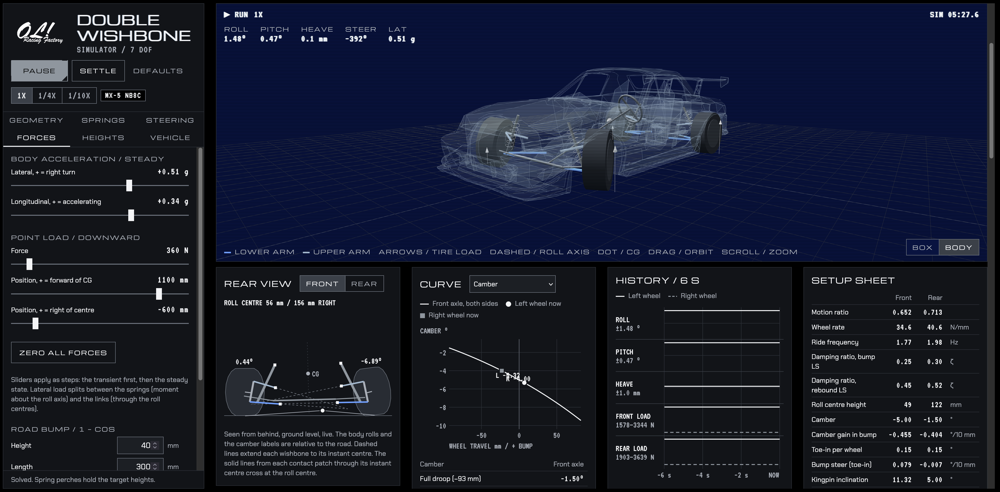
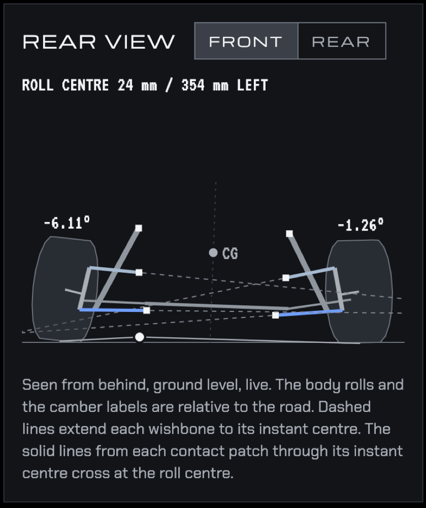
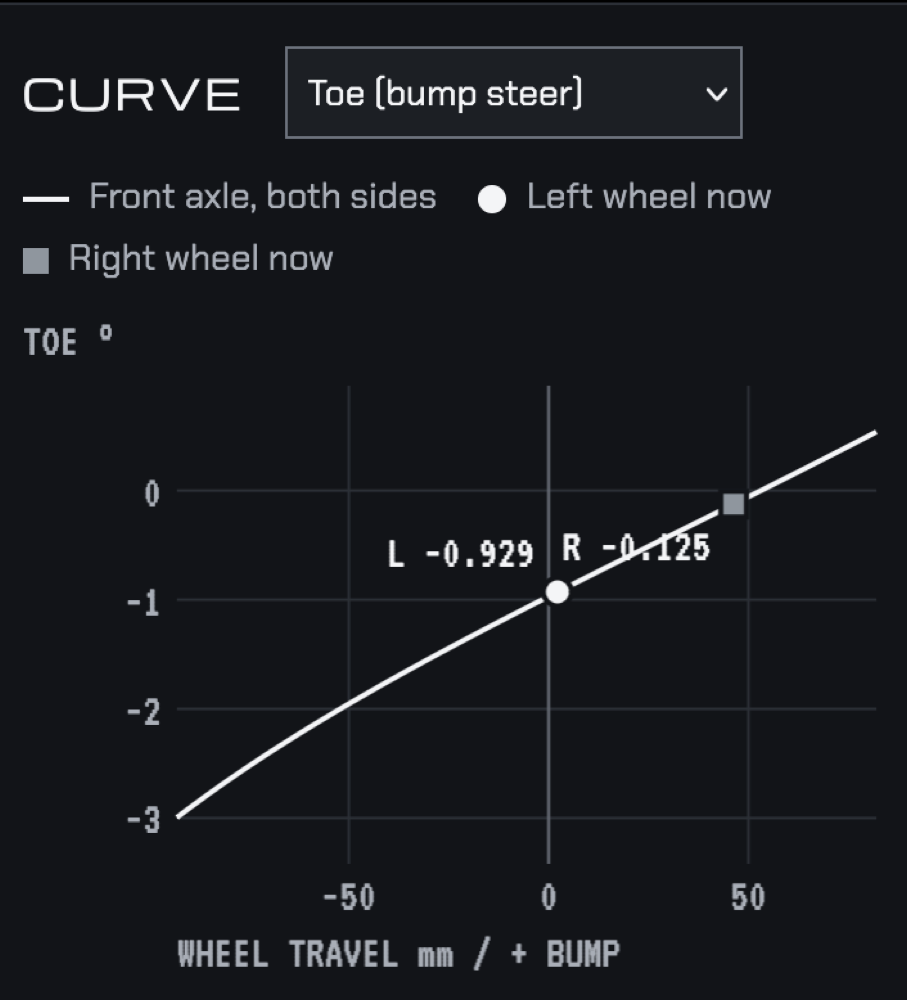
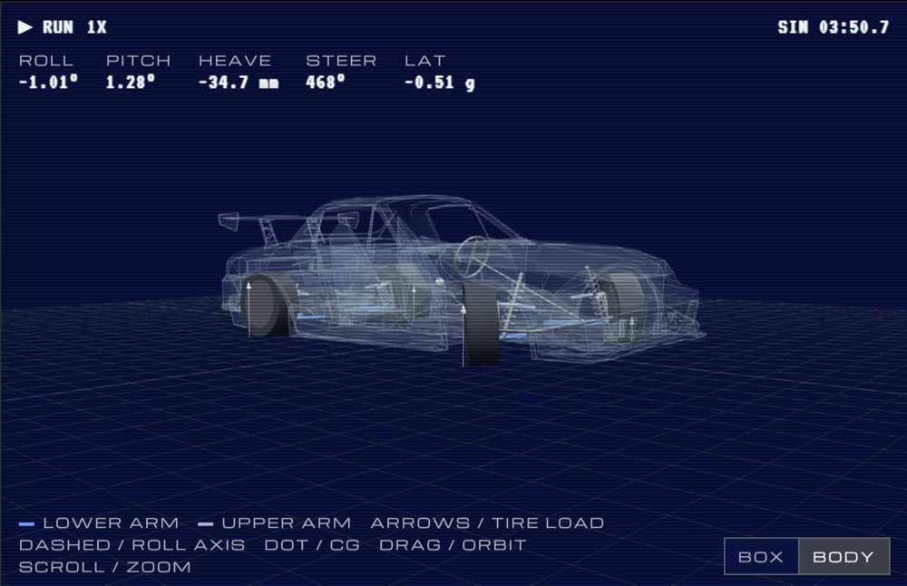

Git.io: https://refriderator.github.io/Double-Wishbone-Simulator/
Repository: https://github.com/refriderator/Double-Wishbone-Simulator
The goal was to build a tool that allowed me to visually inspect setup decisions and make suspension geometry decisions before any wrenches were turned.
Users provide arm lengths, pivot points, spring rates and damper settings, then lean on the car with cornering g, braking, a bump or the steering wheel, and watch what each corner does. It’s set up as an NB Miata by default but every number can be changed.

Mathematics
Nothing in here is exotic, it’s mostly geometry and F = ma.
- Each corner seen from the front is a four-bar linkage. The two arms swing on circles, so finding the ball joints is a circle intersection problem.
- The upright is a rigid body in 3D. It leans with the arms, then rotates about the kingpin axis until the tie rod is the right length. That last part boils down to one equation, A + B cos ψ + C sin ψ = 0, which has an exact answer, so no iterating.
- Roll center is two line intersections. Extend the arms to find the instant center, draw a line from the contact patch through it, and see where it crosses the centerline.
- The car itself has 7 degrees of freedom: heave, pitch, roll, and each wheel moving up and down. I step it 4000 times a second with semi-implicit Euler, which is simple and stays stable.
- Roll inertia uses the parallel axis theorem because the body rolls about the roll axis, not its CG.
What went wrong
Solving the linkage every time step was too slow. I solve it once into a lookup table over wheel travel and rack position, then interpolate.
Ride height wouldn’t land exactly where I set it. A tilted body carries its CG off center, so the corner loads change. Working out the loads at the tilted attitude fixed it.
All of this along with geometric limitations and trying to match stock values with Mazda’s published numbers was also very frustrating. For example, the rear upper arm pivot was 68 mm too far outboard, and to make up for it the sim had the arm at 188 mm when it’s really 213 mm. The roll center still came out at 120 mm, so nothing looked off until I lowered the car and it moved the wrong way.
My setup sheet and the simulation disagreed on roll gradient by about 1%. The motion ratio changes as the wheel moves, so the wheel rate isn’t just spring rate times motion ratio squared. Using the slope at the actual ride height made them match.
I mixed up left and right more than once. Now positive means right for everything.


What it doesn’t do
No tire grip model, so camber and toe don’t change how much the car sticks. No anti-dive or anti-squat. And the fitted numbers are my best match, not Mazda’s drawings. The page marks which is which.
The body in the 3D view comes from an Assetto Corsa NB mod, converted down to a low-poly shell.
